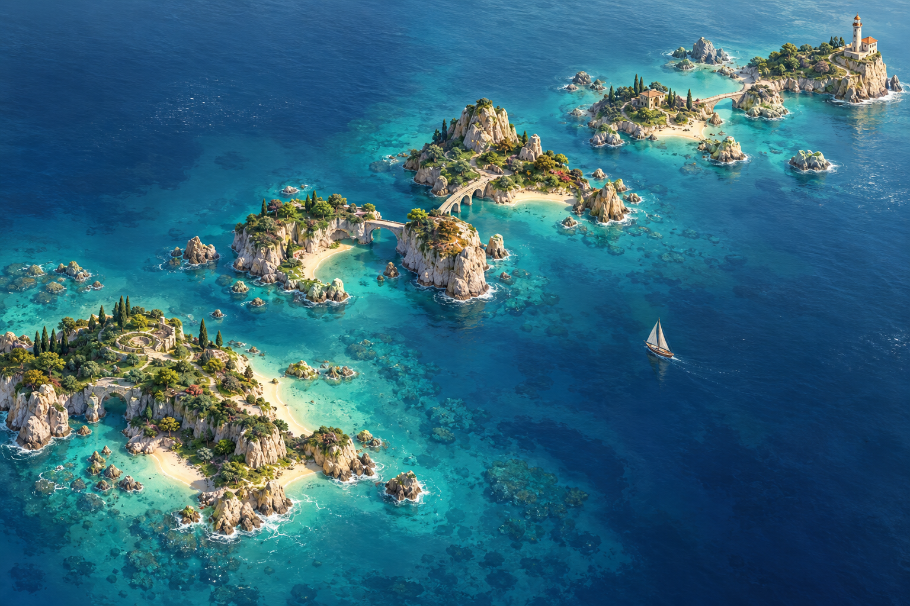
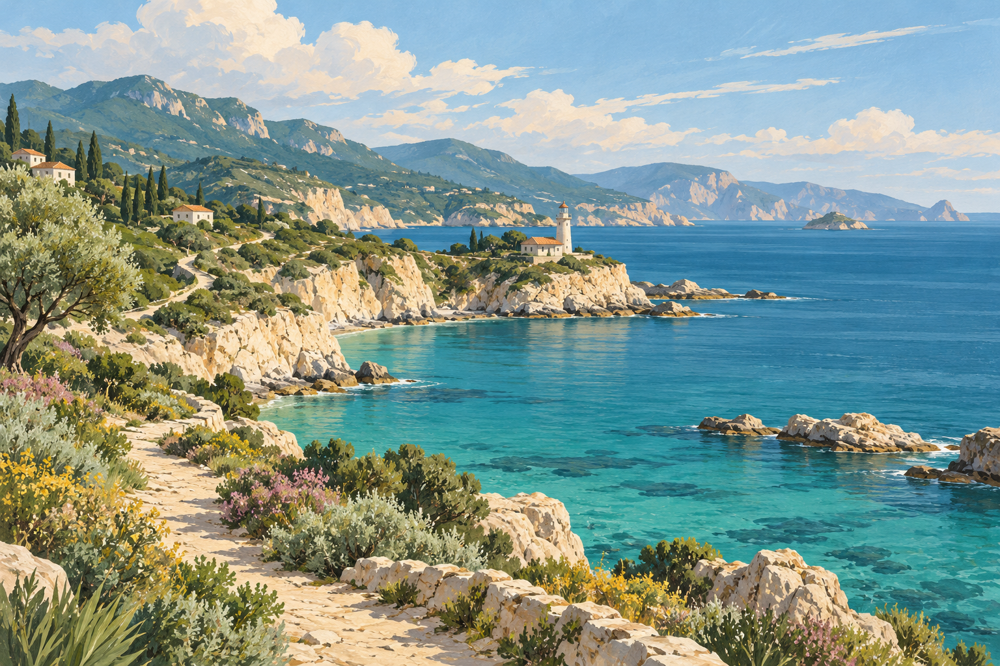

1 · Графит · Рекомендуемый
Универсальный основной вариант. Поддерживает палитру команды.Лимбус · визуальные варианты
Варианты оформления
Без красных кнопок, тяжёлой нижней тени и двойных рамок.
Кнопки
Новая карта
А · Архипелаг · Выбрано
Свободное морское путешествие между островами. Больше простора и воздуха.

Б · Одиссея
Последовательный маршрут к маяку. Лучше подчёркивает движение по вехам.
Мой ритм
Пейзажный календарь
Активный день открывает часть прибрежного пейзажа. Без записей — спокойная закрытая ячейка.
пн19·

вт20✓ср21·
чт22✓
пт23·
сб24·
вс25✓
Пример оформления с условными датами и отметками. В приложении используются только фактические действия; день без записей не означает пропуск лечения.
Иллюстрации созданы специально для проекта через imagegen. Это варианты оформления; пороги прогресса, баллы и правила скидок не меняются.